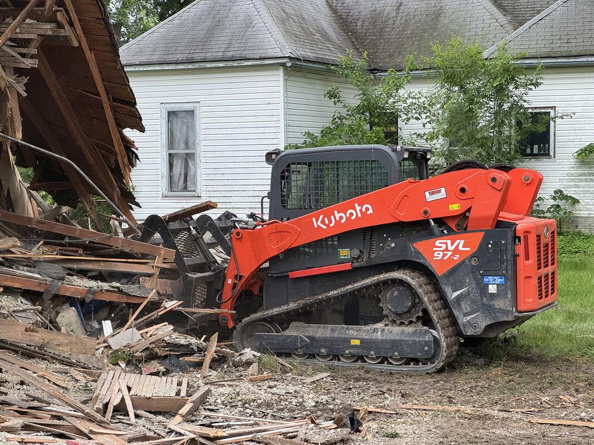

Planning to tear down a building in Columbia, MO? Before scheduling any demolition work, you need to understand local permit requirements. The rules differ significantly depending on whether your property is inside Columbia city limits or in unincorporated Boone County—and getting it wrong can mean fines, project delays, or having to start the process over.
This guide walks you through everything you need to know about demolition permits in Mid-Missouri, including the step-by-step process, costs, timeline, and how to handle asbestos requirements.
In This Guide:
Do You Need a Demolition Permit in Columbia, MO?
The short answer: yes, if your property is within Columbia city limits. The City of Columbia requires a demolition permit for any structure being torn down, whether it's a house, garage, commercial building, or outbuilding.
However, if your property is in unincorporated Boone County (outside city limits), no county-level demolition permit is required. Many property owners are surprised by this distinction, especially since some addresses with a Columbia mailing address are technically in unincorporated Boone County.
Not sure if you're in city limits? Contact Boone County Resource Management at (573) 886-4330 to verify your property's jurisdiction before starting the permit process.
City of Columbia Demolition Permit Requirements
If your property is within Columbia city limits, here's the step-by-step process for getting a demolition permit:
- File an "Intent to Demolish" notice — Submit this to the Building & Site Development Division at 701 E. Broadway, 3rd Floor. This starts a mandatory 30-day waiting period.
- Wait 30 days for Historic Preservation review — The Historic Preservation Commission reviews the property during this period, especially for buildings 50 years or older.
- Schedule an asbestos inspection — Missouri DNR requires a certified asbestos inspection for regulated structures before demolition can begin.
- Obtain utility disconnect certificates — All utilities must be disconnected and verified: sewer, water, electricity, natural gas, and cable.
- Submit the demolition permit application — Apply online through the City's permit portal or in person at Building & Site Development.
- Receive your permit and schedule demolition — Once approved, work must begin within 30 days of permit issuance.
City of Columbia Building & Site Development
701 E. Broadway, 3rd Floor, Columbia, MO 65201
Phone: (573) 874-7474
como.gov/community-development/building-site-development
The 30-Day Intent to Demolish Waiting Period
One of the most important things to plan for is Columbia's 30-day "Intent to Demolish" waiting period. This is not optional—your demolition permit cannot be issued until 30 calendar days after you file the notice.
The purpose of this waiting period is to give the Historic Preservation Commission time to review the property. This is especially relevant for:
- Buildings 50 years or older — These receive closer scrutiny and may require historical documentation
- Properties in historic districts — Columbia's East Campus, North Central, and West Broadway neighborhoods have additional requirements
- Historically significant structures — Buildings on or eligible for historic registers
The review doesn't necessarily prevent demolition—it's a review process, not a block. But it can add time if additional documentation is requested. The good news is you can use the 30-day waiting period productively by scheduling your asbestos inspection and coordinating utility disconnections.
Planning Tip
File your Intent to Demolish as early as possible. Use the 30-day waiting period to handle utility disconnections and asbestos inspections so you're ready to go once the permit is issued.
Need help planning your timeline? (573) 200-6499
Demolition Permit Costs and Fees
Demolition permit fees in Columbia vary based on the scope of your project. Here's what to budget for:
| Fee Type | Estimated Cost |
|---|---|
| Demolition permit fee | Varies by project scope |
| Recent example: home + garage | ~$2,100 |
| Asbestos inspection | $300 - $800 |
| Asbestos abatement (if needed) | $2,000 - $10,000+ |
| Utility disconnection fees | Varies by provider |
Permit fees are set by the City and depend on the structure being demolished. You can get a fee estimate using the City of Columbia's online permit fee calculator or by calling Building & Site Development at (573) 874-7474.
For a full breakdown of what the actual demolition work costs, see our guide to house demolition costs in Columbia, MO.
Missouri Asbestos Inspection Requirements
The Missouri Department of Natural Resources (DNR) requires a certified asbestos inspection for regulated structures before demolition. This is a state-level requirement that applies regardless of whether your property is in Columbia city limits or Boone County.
Key Asbestos Rules
- 10 working days notice — You must notify MO DNR at least 10 working days before demolition begins
- Certified inspector required — Only a Missouri-certified asbestos inspector can perform the inspection
- Inspection report required — A copy of the asbestos inspection report must be submitted with your DNR notification
Asbestos Abatement Thresholds
If the inspection finds asbestos-containing materials exceeding any of these thresholds, professional abatement is required before demolition:
- 160 square feet of surface area
- 260 linear feet of pipe insulation
- 35 cubic feet of material
Common locations for asbestos in older homes include floor tiles, pipe insulation, siding, roofing materials, and textured ceilings. Pre-1980 mobile homes may also contain asbestos in flooring, siding, or insulation.
MO DNR Asbestos Program
Phone: (573) 751-4817
Email: asbestosnotifications@dnr.mo.gov
dnr.mo.gov/air/business-industry/asbestos
Boone County vs. City of Columbia: Key Differences
This is the biggest source of confusion for property owners in Mid-Missouri. Here's a side-by-side comparison:
City of Columbia
- Demolition permit required
- 30-day "Intent to Demolish" waiting period
- Historic Preservation Commission review for 50+ year buildings
- Utility disconnect certificates required
- Online portal available
- Permit fee varies by project
Contact: Building & Site Development, (573) 874-7474
Boone County (Unincorporated)
- No county demolition permit required
- No waiting period
- Still need MO DNR asbestos inspection
- Still need utility disconnections
- Fire district coordination for controlled burns
- No permit fee at county level
Contact: Resource Management, (573) 886-4330
Even in unincorporated Boone County where no demolition permit is needed, you still have responsibilities. Utility disconnections and asbestos compliance are mandatory regardless of jurisdiction. And if you plan to burn demolition waste, you'll need a permit from the Department of Natural Resources—only untreated wood waste is eligible.
Demolition Permits in Other Mid-Missouri Cities
Permit requirements vary by municipality across Mid-Missouri. If your property is in Fulton (Callaway County), Boonville (Cooper County), Centralia, Ashland, or another town in our service area, always check with the local building department before scheduling demolition.
Missouri does not enforce a statewide building code—requirements are managed by local jurisdictions. This means permit rules, fees, and timelines can be very different from one city to the next. What's true in Columbia and Boone County may not apply in Fulton or Boonville. Atlas serves properties throughout Boone, Callaway, Cole, Howard, and Cooper counties, and we know the local requirements in each area.
No matter where your property is located, the state-level MO DNR asbestos requirements apply to all regulated structures. That's the one constant across every jurisdiction in Missouri.
Let Atlas Handle Your Demolition Permits
We manage the entire demolition process from permits through final cleanup. You don't have to navigate the paperwork alone.
(573) 200-6499 Request Estimate OnlineHow Atlas Handles Demolition Permits for You
Navigating the permit process is one of the biggest reasons property owners hire a professional demolition contractor rather than attempting the project themselves. At Atlas Excavation & Demolition, we handle every step:
- Free site assessment — We visit your property, evaluate the structure, and provide a detailed estimate that includes permit costs
- File Intent to Demolish — We submit the 30-day notice to Building & Site Development on your behalf
- Coordinate asbestos inspection — We schedule and manage the certified asbestos inspection, and coordinate abatement if needed
- Manage utility disconnections — We help coordinate with utility providers to get all services properly disconnected
- Obtain all required permits — We handle the permit application, fees, and any follow-up with the City
- Complete demolition and site cleanup — Once permits are in hand, we execute the demolition, haul debris, and leave your site clean and level
Working with an experienced local contractor saves you 30-45 days of navigating bureaucracy on your own. We know the Columbia permitting process inside and out, and we keep your project on schedule.
We also handle mobile home removal, concrete removal, and site preparation for new construction after demolition.
Frequently Asked Questions
Do you need a permit to demolish a house in Columbia, MO?
Yes. The City of Columbia requires a demolition permit for any structure. You must file a 30-day "Intent to Demolish" notice, obtain utility disconnect certificates, and get approval from Building & Site Development. Properties in unincorporated Boone County do not require a county-level demolition permit.
How much does a demolition permit cost in Columbia, MO?
Permit fees vary by project scope. A recent residential demolition permit for a home and garage was approximately $2,100. Contact Building & Site Development at (573) 874-7474 for current fee schedules, as costs depend on the structure being demolished.
What is the 30-day Intent to Demolish requirement in Columbia?
Columbia requires a 30-day waiting period after filing an "Intent to Demolish" notice before a demolition permit can be issued. This allows the Historic Preservation Commission to review the property, especially for buildings 50 years or older. The clock starts when the notice is filed with Building & Site Development.
Do you need a demolition permit in Boone County, Missouri?
No, unincorporated Boone County does not require a demolition permit. However, you still need to disconnect all utilities, comply with Missouri DNR asbestos inspection requirements, and coordinate with your local fire protection district if a controlled burn is involved.
Is an asbestos inspection required before demolition in Missouri?
Yes. Missouri DNR requires a certified asbestos inspection for regulated structures before demolition. You must provide 10 working days notice to DNR before starting demolition. If asbestos exceeds thresholds of 160 square feet, 260 linear feet, or 35 cubic feet, professional abatement is required before demolition can proceed.
How long does it take to get a demolition permit in Columbia, MO?
Plan for at least 30-45 days. The 30-day Intent to Demolish waiting period is the minimum, plus time for utility disconnections, asbestos inspection, and permit processing. Working with an experienced demolition contractor can help streamline the process and avoid delays.
Can a demolition contractor handle permits for me?
Yes. Most professional demolition contractors in Columbia handle the entire permit process as part of your project. Atlas Excavation & Demolition manages permit applications, utility coordination, asbestos inspection scheduling, and Historic Preservation Commission requirements on behalf of our clients.
Get Your Free Demolition Estimate
Whether you're planning a house demolition, mobile home removal, or concrete removal in Columbia or anywhere in Mid-Missouri, Atlas Excavation & Demolition handles the entire project—permits included.
Contact us today for a free, no-obligation estimate:
- Phone: (573) 200-6499
- Email: hello@deployatlas.com
- Online: Request a Free Estimate
For more on demolition costs, see our guides to house demolition costs, mobile home removal costs, and concrete removal costs in Mid-Missouri.